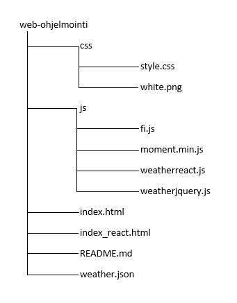

Kuvaus
Harjoitustyö on sääpalvelu, joka käyttää avointa dataa Open Weatheristä. Paikkakunnan kirjoittamalla käyttäjä näkee tämän päivän sään, ja painikkeista viiden seuraavan päivän säätiedot. Tiedot ovat oletuksella lähimpänä haku hetken aikaa, esimerkiksi kello 11:00 haettaessa, palvelu näyttää kello 12 sääennusteen.
Toteutus
Projektin rakenne:
Sovelluksessa käytettiin ulkoisina kirjastoina jQueryä ja moment.js:ää. Suunnitellelimme hakevamme datan Ilmatieteenlaitokselta, mutta se osoittautui liian vaikea lukuiseksi, joten vaihdoimme Open Weatheriin. Sovellus aloitettiin tekemään reactia käyttäen, mutta vaihdoimme jQueryyn, sillä ulkoisen JSON-tiedon hakeminen eri palvelimelta koitui suureksi ongelmaksi. Saimme kuitenkin haettua reactilla tietoa paikallisesta JSON-tiedostosta ajaxilla, toteutuksen näet tästä. JQueryssä haetaan tietoa getJson-metodilla ja tiedot saadaan suoraan sivustolle urlin kautta. Haetut tiedot saadaan näkyviin haluttuun muotoon append()-metodilla. Kun käyttäjä kirjoittaa haluamansa paikkakunnan, urliin lisätään kyseinen paikkakunta. City-muuttuja hakee paikkakunnan input-kentästä, kun Hae-painiketta painetaan. Päivämäärä haetaan ulkoisesta moment.min.js-tiedostosta ja fi.js:llä saadaan käännettyä ne suomeksi. Kun päivämäärä-paniketta painetaan, empty()-metodi tyhjentää divin aiemmat tiedot ja hakee vasta sitten uudet tiedto. Jos input-kenttä on tyhjä Hae-paniketta painaessa, sivusto antaa ilmoituksen, ettei kenttä voi olla tyhjä.
Ongelmat
Kun aloitimme projektin, käytimme paljon aikaa ilmatieteennlaitoksen datan tutkimiseen, joka ei johtanut mihinkään. Myös react vei liikaa aikaa, kun ilmeni ongelma, ettei dataa saatu haettua render-elementtiin. Reactin käyttö koitui muutenkin hankalaksi, sen vähäisen käyttökokemuksen takia. Emme onnistuneet hakemaan reactilla dataa toiselta palvelimelta, joten seminaarien jälkeen päätimme vaihtaa toteutuksen jQueryyn. Ongelmana jQueryssä on ollut välimuistista poistumattomat tiedot. Ikonien näkyiivn saaminen oli myös ongelmallista, sillä aioimme hakea ikonit muualta kuin OpenWeatheristä. Saimme kuitenkin OpenWeatherin omat ikonit näkyviin pienen viilailun jälkeen. Yritimme saada sivuston hakemaan oletuksena oman sijainnin säätiedot, mutta Google Maps käyttää https:ää ja OpenWeather ei tue https-yhtetyttä, joten luovuimme ajatuksesta yrityksestä huolimatta.